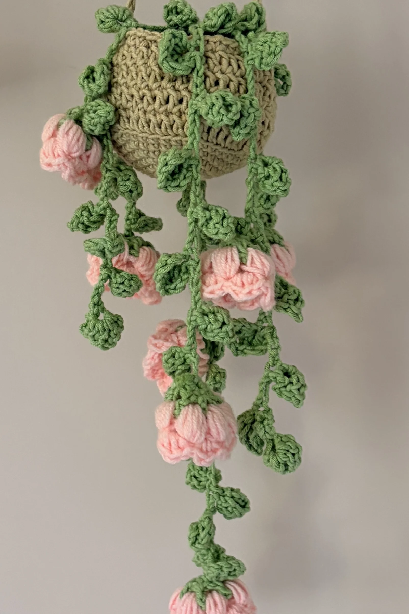

Free Crochet Pattern
how to crochet a lily of the valley hanging planter | beginner-friendly tutorial + free pattern (step-by-step)
Today I’m sharing the free written pattern for this super cute Lily of the Valley Hanging Planter. This project is simple, relaxing, and beginner-friendly, making it perfect for anyone who loves soft and dreamy crochet décor.

About the Pattern
This Lily of the Valley Hanging Planter is a soft and dreamy crochet décor project made with simple stitches and a few basic crochet techniques.
The finished planter has a crocheted pot, a hanging strap, three leafy vines, and six little Lily of the Valley flowers. You can make it for your room, as a handmade gift, or simply as a pretty piece of crochet décor.
Video Tutorial
Prefer to follow along with a video? Watch the full video tutorial below.
Materials
- Green yarn for the vines and hanging strap
- Brown yarn for the soil
- Beige yarn for the pot
- White or pink yarn for the flowers
- 4 mm crochet hook
- Stitch marker or bobby pin
- Scissors
- Yarn needle
- Stuffing
Want to shop the materials?
Check out the materials here →Abbreviations
Written Pattern
How to Make the Hanging Planter
1. Planter Base & Soil
Make 2 — one beige circle for the planter base and one brown circle for the soil.
R1
MR, 6 sc. Pull tight to close.
R2
Inc in each st around. (12 sc)
R3
(1 sc, 1 inc) around.
R4
(2 sc, 1 inc) around.
R5
(3 sc, 1 inc) around.
R6
(4 sc, 1 inc) around.
R7
(5 sc, 1 inc) around. Sl st.
2. Pot Structure
R8
Ch 2. 1 dc in each st around in BLO, sl st.
R9–R11
Ch 2. 1 dc in each st around through both loops, sl st.
At the end of R11, sl st and ch 1.
Assembly
Place the soil circle on the planter base and sc through both layers. Add stuffing before closing completely.
3. Hanging Strap
Attach beige yarn to one side. Ch 40, sl st to the opposite side, ch 1 and fasten off.
4. Vines & Leaves
Make 3 vines.
Leaf
Ch 4. In 3rd ch from hook: 2 dc, ch 2, 2 dc, ch 2, sl st. Sl st into next ch.
Vine
Ch 7 for spacing, then repeat the leaf pattern. Continue to desired length, approximately 15 leaves. Fasten off.
5. Lily of the Valley Flowers
Make 6 flowers.
Sepals
R1: MR, 6 sc. Pull tight and sl st.
R2: Ch 2, 1 dc in same st. *(Ch 1, 1 dc in next st)* around. Sl st and fasten off.
Petals
Attach flower yarn to any ch-1 space and ch 2.
In same space: 5-loop bubble stitch, ch 1. Repeat in all 6 spaces. Sl st.
Edging
Ch 1. In each space: 1 sc, 2 dc, 1 sc. Repeat around, sl st and fasten off.
6. Final Assembly
Vines
Sew all 3 vines to the center of the soil section.
Flowers
Sew the 6 flowers along the vines in your preferred arrangement.
A Little Note from Stitchy Days ♡
Hi there
Thank you so much for trying one of my crochet patterns! I’m so happy to have you here, and I hope you enjoy making this project as much as I enjoyed creating it.
If you make something using this pattern, I’d love to see it! Feel free to tag Stitchy Days when you share your finished project. Seeing your creations means so much to me as I continue growing this little crochet corner.
Thank you for supporting my work and happy crocheting! ♡
